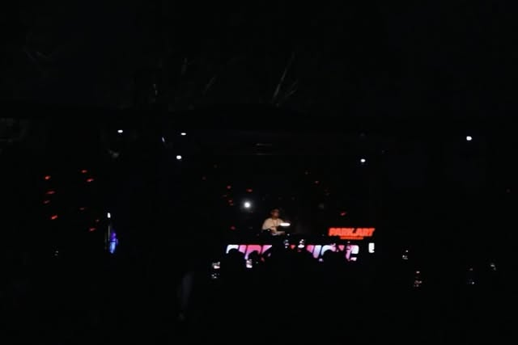

Território
Curitiba e região metropolitana. O palco-assinatura é o Park Art, em Pinhais. A frase de marca cita a cidade, não um festival europeu.
Marca · leitura de 20 out 2026
O perfil sem login mostra 12 peças no grid e pede conta para o resto das 133. As que abriram bastam para cravar o lugar dele: anfitrião da Fire, não estrela importada.



Curitiba e região metropolitana. O palco-assinatura é o Park Art, em Pinhais. A frase de marca cita a cidade, não um festival europeu.
Fortalecer a cena e os artistas locais. Em 2016 a Fire era a chance dele tocar. Em 2026 a chance é dividida.
Set no YouTube, line com nome de casa, fotógrafo marcado, comentário pedindo track ID. A prova é específica. Número de seguidor sozinho não segura booking.
| Peça | Sinal | Uso na campanha |
|---|---|---|
| 8 out 2026 | 219 curtidas, 109 comentários | Texto de gratidão gera conversa. Priorizar resposta, não só alcance. |
| 12 mai 2026 | 360 curtidas, 141 comentários. Perguntam a primeira faixa. | Publicar tracklist em até 48 horas depois do vídeo. |
| 18 ago 2025 | 407 curtidas. Origem da Fire em 2016. | Este é o filme de origem. Repetir uma vez por temporada, não toda semana. |
| Fire 10 anos | Cartaz, data, casa, ingresso | Anúncio mora no perfil da festa. O perfil do DJ comenta e agradece, não compete com o cartaz. |
Um corte de 20 segundos do set de maio e a pergunta: “qual faixa vocês pedem de novo?”. Responder os IDs no comentário fixado.
Foto de crédito, não print roubado. Park Art, endereço, e um convite para a próxima data oficial da Fire.
Um artista local da última line, com o som dele na frente. A legenda apresenta, não se apresenta.
Vida Longa como diário de estúdio da Nectar Beats. Um take, um título de trabalho, link da lista de espera.